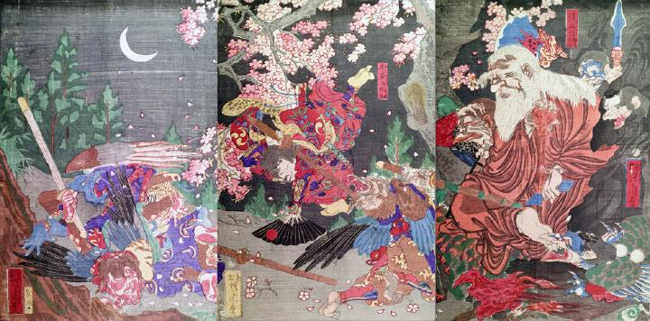

月夜の鞍馬山で牛若丸が天狗たちと武芸の稽古をしている。僧正坊鞍馬天狗は、配下の天狗たちを従えて、それを見守っている。
著作者：猩々周麿（河鍋暁斎）／出典：親書誌：U426_nichibunken_0130：僧正坊と牛若丸；ソウショウボウトウシワカマル／日付：2009／資源識別子：U426_nichibunken_0130_0001_0000
Copyright (c)2010- International Research Center for Japanese Studies, Kyoto, Japan. All rights reserved.